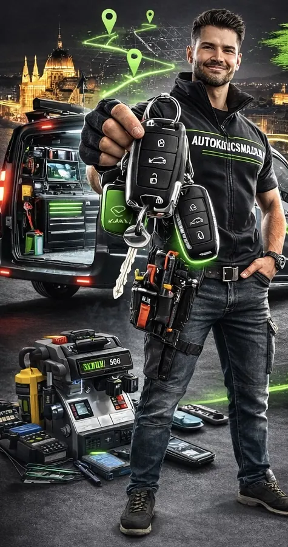
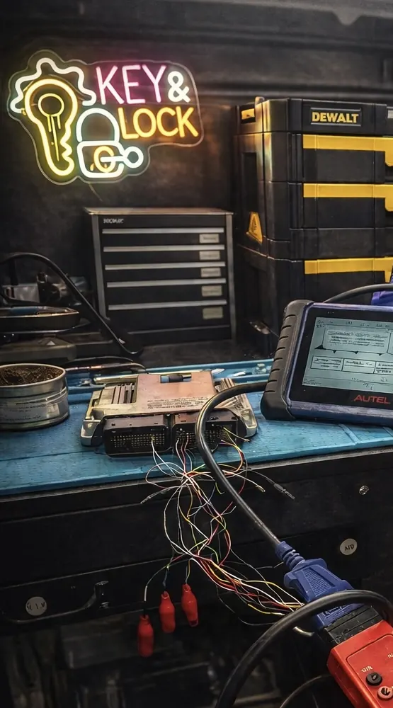

Elveszettaz utolsóAutókulcsa?Mi jövünkBudapestenés segítünk!

- Guruló műhelyautóval
bárhol képesek vagyunk
egy új autókulcsot késziteni! - Hivástól számítva
1 órán belül
elkészül az új kulcs. - Nincs szükség zárcserére!
A meglévő zárhoz készitjük
az új kulcsot. - Az elveszett kulcsokat
töröljük az autó rendszeréből,
így illetéktelen nem fogja
tudni használni! - Általában két kulcsot készitünk,
mert az egy kulcs nem kulcs!
Ellopták, elveszett?
+36 30 685 0133
Gurulóműhelyautó
Budapestén
és környékén
Autókulcskészítés
a helyszínen
gyors, profi
és szakszerű megoldással.
- Forrasztás, javítás, kulcsmarás
- Távirányítók és immobilizerek programozasa
- Elveszett kulcsok törlése a rendszerből
Gyors és biztonságos
megoldás bárhol,
bármikor!